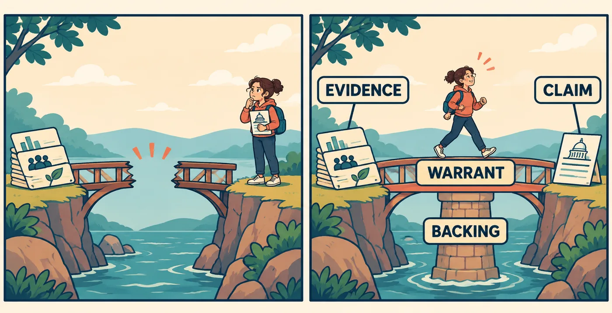
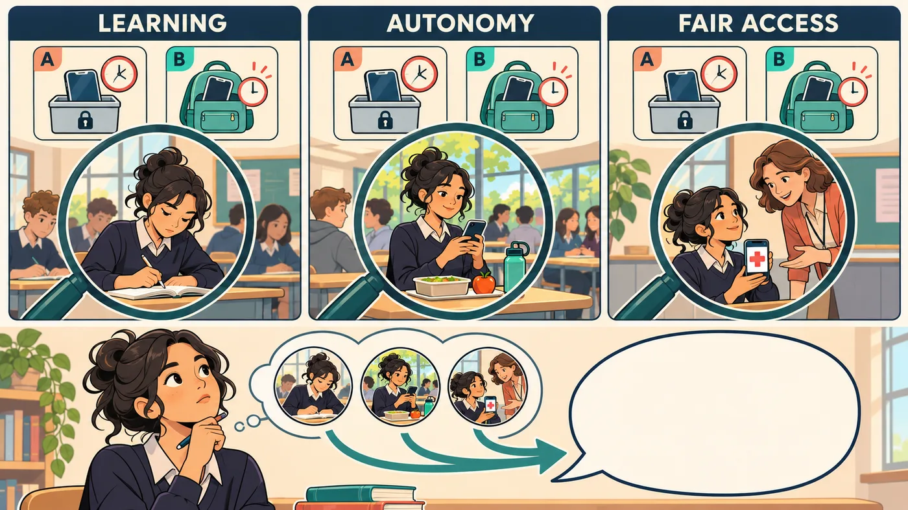

AP LANGUAGE · TWO CONNECTED CLASS PERIODS
Phone policy · 50 minutes per lesson · Teacher guide and student practice materials
Open Learning is Fun → Lessons → AP English, Section 1. Begin with Argument 1, then Argument 2. Both lessons are available; the order is instructional, not a technical prerequisite lock. Students need a notebook or document for rehearsal and a saved copy of their Lesson 1 map and recommendation. Lesson 2 does not import that response automatically. No due date has been imposed.
The outcome is a defensible line of reasoning. Toulmin names six reasoning jobs, not six required paragraphs. Criteria organize an evaluative argument; they do not replace warrants. Assess reasoning rather than agreement with a preferred phone policy. The app supports a draft, feedback and revision using the existing non-numeric outcomes.
Source discipline: Research cards paraphrase real studies. Named students, school observations and the final pilot are invented for practice. Require students to distinguish these. The British studies inform questions; they do not establish effects at this school. Do not ask students to disclose medical or family circumstances.
| Time | Action and teaching language | Evidence of learning |
|---|---|---|
| 0–5 | Display: “Phones distract students. Therefore, schools should ban them.” Ask: “What still needs to be proved?” Students write, compare in pairs, then share. Do not debate preferred policies yet. | Students notice the leap from some distraction to an all-day ban. |
| 5–17 | Use stages 1–2 to model the six components. Say: “Grounds show what we have. A warrant explains why that supports our claim. Backing gives a reason to accept the warrant.” Pause for the missing-warrant rehearsal before teaching backing. Then introduce scope and exceptions. Students label the full model. | Students distinguish warrant from backing and qualifier from vague hesitation. |
| 17–25 | Partners explain the model’s six jobs without reading the labels. Ask: “If we removed the warrant, what would the reader have to supply? If we removed the qualifier, what stronger claim would we accidentally make?” Complete the first four app checks. | Students explain the function of each component rather than recite names. |
| 25–35 | Use stage 3’s research cards and missing-qualification model. Pairs repair it, exchange responses and challenge one inference. Finish the two remaining checks. Ask: “Which outcome did each study actually examine?” | A limited, reviewable recommendation replaces a guaranteed outcome. |
| 35–40 | Students draft the six-part map and 120–180-word independent recommendation. They may have begun the map during pair repair; now the independent-study decision is their own. | All six jobs serve one connected recommendation. |
| 40–45 | Submit for feedback, then revise one reasoning connection. If AI is unavailable, use the public rubric labels and the peer protocol below; work can still be saved. Copy the revised map and paragraph for next class. | A specific revision responds to a genuine weakness. |
| 45–50 | Exit: underline the warrant. Finish: “My argument is strongest when ___, but needs qualification when ___.” Bridge: “Two well-supported claims can disagree because their writers judge success differently.” | Students can identify their own assumption and limit. |
Timing note: If typing a map and prose takes longer, begin the independent map during the final three minutes of pair work; retain revision and exit retrieval. At least 30 minutes involve writing, explaining, comparing or revising.
| Time | Action and teaching language | Evidence of learning |
|---|---|---|
| 0–5 | Students reopen their Lesson 1 work and copy its claim and warrant. Ask: “Your warrant assumes a good policy should do what?” Students name the value. If work is missing, reconstruct a map from the source cards. | A criterion develops from the earlier reasoning. |
| 5–15 | Use stage 1 to distinguish a criterion from a reason or verdict. Model learning, autonomy and fair access. Students supply their own criterion, justify it and make it observable. Complete its two checks. | Criteria could fairly be met by either policy. |
| 15–23 | Model stage 2’s five moves, then have pairs draft their own outline in the rehearsal. Say: “These are moves, not a compulsory paragraph count. Toulmin works inside the application of each criterion.” Complete its checks. | Outline has an argumentative route, not three unrelated reasons. |
| 23–33 | Use stage 3’s competing options. Have partners defend different priorities, then switch. Reveal the new pilot card in the final. Ask: “Does A’s lower interruption count settle the question? What else matters, and how certain are we?” Complete the final checks. | Students weigh magnitude, certainty, distribution and possible modifications. |
| 33–40 | Independently revise the rehearsal outline using the new pilot and develop the trade-off paragraph. Require the original claim and warrant as the starting point. A change of position is welcome when justified. | Two or three justified criteria are applied consistently to both options. |
| 40–45 | Submit, read feedback and revise. Add: “Compared with Lesson 1, I now ___ because ___.” If AI is unavailable, use the peer protocol. | Revision improves a particular criterion, warrant or weighing move. |
| 45–50 | Exit: “What is the strongest reason to reject your conclusion, and why does it nevertheless remain defensible?” Save the full outline and paragraph. | Conclusion survives a serious challenge through reasoning and qualification. |
Writing and revision continue the outline begun at 15–23 minutes. At least 28 minutes involve student construction, comparison and revision. If time runs short, reduce whole-class sharing rather than the independent revision.
Peer protocol: Name one effective connection using the writer’s own words. Ask one question about a missing warrant, unjustified criterion or unresolved trade-off. Give a next move, not replacement prose. The writer decides what to change and explains why.
Sentence supports: “This evidence supports my claim because ___.” “That connecting principle is reasonable because ___.” “A good policy should ___; this matters because ___.” “Although ___, ___ deserves greater weight here because ___.” “I would reconsider if ___.” Remove these supports as students gain control.
For students ready for extension: Defend a different priority with the same evidence; identify what new evidence would discriminate between the policies. Do not reward merely adding more criteria.
Common misconceptions: A warrant is not just another fact; backing supports the warrant. Qualification specifies limits rather than weakening every verb. A criterion is not a desired verdict. The preferred policy need not win every criterion. A small observational pilot cannot establish causal effects. Applying the same criteria does not require treating every criterion as equally important.
Outcome language: Completed; Demonstrated with support; Demonstrated independently; Needs another attempt. No numeric grade is required. On revision, describe only improvement actually visible in the writing.
Claim: ___
Grounds and source: ___
Warrant connecting grounds to claim: ___
Backing for that warrant: ___
Qualifier specifying scope: ___
Rebuttal condition and response: ___
Connected recommendation (120–180 words): ___
Revision note: I changed ___ because ___.
Starting point from Lesson 1 — claim: ___; warrant: ___.
Developed trade-off paragraph (120–180 words): ___
Reflection: Compared with Lesson 1, I now ___ because ___.
LESSON 1 · REFERENCE AND ANSWER NOTES
Construct and revise a phone-policy argument whose claim, grounds, warrant, backing, qualification and response to an exception work together.
Jia loses her place each time a phone lights up nearby. Arun keeps his phone ready because his ride home changes without warning. At a fictional student council meeting, both ask to be heard. “Phones distract students. Therefore, ban them all day.” The conclusion has sprinted ahead of its evidence. First learn the common pattern: make a claim, provide grounds, and explain the warrant connecting them. Then test its limits.

Answer: Avoidable interruptions to a shared learning task justify a proportionate restriction.
Repeating the observation gives more grounds; a warrant explains why the grounds justify the recommendation.
Rehearsal: Invented case: notifications interrupt a timed practice task. Claim: silence notifications during that task. Grounds are supplied. Write only the missing warrant in your own words.
Comparison model: A short restriction is reasonable when avoidable alerts interfere with everyone’s chance to complete the task. Compare: did you connect the interruption to the right to restrict it?
Answer: The claim extends beyond the setting the evidence supports.
Evidence about one activity does not by itself justify a rule covering every activity.
A warrant is not automatically true because we have named it. Backing gives a reason to accept that connecting principle. A qualifier sets the claim’s scope or strength. In Toulmin analysis, rebuttal identifies conditions where the inference may not hold. In writing, acknowledge that challenge and explain whether it changes, limits, or defeats your claim.
Answer: Each student deserves a fair opportunity to learn without preventable interference from others.
The observation is grounds for this case; the fairness argument supports the warrant used to interpret it.
Answer: Phones should normally stay away during reading, with agreed accessibility exceptions.
A warranted exception narrows the claim without abandoning it.
Rehearsal: Supply just the missing response. Claim: phones should normally be away during reading. Grounds, warrant and backing are already given. Objection: Arun needs to receive a changed pickup plan. Write one workable response and one condition that would make you reconsider it.
Comparison model: Allow a scheduled contact check or reliable office message route. If urgent changes cannot reach Arun in time, revise that arrangement. Compare: did you address his actual need rather than call him irresponsible?
Now put the components to work. Begin with a map, then write connected prose. Use the evidence packet below without pretending it settles every question. Your claim can favor stricter or more flexible restrictions. The test is whether your evidence, reasoning and qualifications fit together. Save your final response: Lesson 2 will reuse its claim and warrant.
Answer: The findings justify investigating a local trial, not assuming the same effect at our school.
A different context limits transfer; it does not erase relevance.
Rehearsal: Repair the missing qualification in the pair model before viewing the sample. Then tell a partner which claim you can still defend.
Comparison model: Research A supports testing the idea, but its schools and policies differ from ours, so local benefits need evaluation. A defensible claim is to trial the restriction, not to promise an improvement.
Answer: They examine different outcomes and designs; use each for the specific claim it can support.
Weigh evidence by its relevance and limits, not by whether its headline supports your preference.
The council now asks whether to extend a reading-time phone restriction to independent study periods. This is a fresh decision, not the model’s reading rule. Choose a position. First make a six-part Toulmin map using the headings Claim, Grounds, Warrant, Backing, Qualifier, and Rebuttal/response. Then write a connected 120–180-word recommendation to the council. Use at least one research card and one relevant scenario detail; name their limits and do not present invented details as research. Address a real exception. After feedback, revise one weak connection and add: “I changed ___ because ___.” Save or copy the final version and map for Lesson 2. In the next lesson you will turn your warrant into a criterion and expand this case into a whole-argument outline.
At the start of Lesson 2, retrieve your final map without rereading the model. Explain why your grounds justify your claim, then complete: “My warrant assumes a good school policy should ___.” In a later class, apply all six jobs to a new issue: whether group projects should include individual reflection.
LESSON 2 · REFERENCE AND ANSWER NOTES
Expand your Lesson 1 Toulmin argument into a complete criteria-based outline that justifies its standards, applies evidence and weighs a serious trade-off.
Reopen your saved Argument 1 map and recommendation. Keep them beside this lesson; they are not imported automatically. Jia and Arun still disagree, even after both offer evidence. They disagree about what a good rule must accomplish. Today you will build a complete argument by making those standards explicit. A criterion is a standard for judgment; a reason says why a particular option meets it.

Answer: How effectively it protects participation in learning while allowing necessary access.
A fair standard names a relevant goal, not the desired verdict.
Rehearsal: Use your own Lesson 1 work. Copy your warrant, turn its underlying value into one criterion, and explain why that criterion matters. Do this before comparing with the model.
Comparison model: Warrant: interruptions justify a limited restriction. Criterion: a good policy protects participation in learning. Justification: a shared classroom should let every student follow the task. Your value can differ if you justify it.
Answer: Check whether necessary accessibility tools remain usable without repeated exclusion from class.
A criterion becomes usable when you identify what meeting it would look like.
Here is today’s whole-argument structure: frame and thesis → justify criteria → apply criteria → engage the strongest challenge → weigh and qualify. These are five rhetorical moves, not a compulsory five-paragraph essay. Each application uses yesterday’s Toulmin reasoning. A longer essay may spend several paragraphs applying one criterion; a short argument may combine moves.
Answer: Establish and justify the criteria.
Choosing a standard is itself an argumentative decision that needs support.
Rehearsal: One move is missing. Thesis: trial lesson-time restrictions. Grounds: the option allows lunch use, unlike the full-day option. Criterion: autonomy. Backing: restrictions should be proportionate to the reason for them. Supply only the warrant connecting these grounds to this criterion.
Comparison model: Allowing choice outside instruction better serves autonomy unless there is a relevant reason to restrict that choice. Compare: did you connect the specific policy difference to the criterion?
Answer: Use its reasoning to support applications of the criteria and test their limits.
Criteria organize the judgment, while claims, evidence and warrants make each application defensible.
Rehearsal: Create your own five-move outline now. Use your Lesson 1 claim and warrant, two or three justified criteria, a supporting detail for each, one serious challenge, and a provisional weighing judgment. Compare with the model only after drafting.
Comparison model: Check for five jobs: a decision and thesis; standards with reasons; evidence-to-criterion connections; the strongest challenge; and a justified priority with a limit. Your position need not match the model.
“A wins two criteria; B wins one. Case closed.” Not yet. One serious access problem may matter more than two minor conveniences. Weighing explains why a consideration deserves priority in this situation. Compare the size, likelihood and distribution of effects, and ask whether an option can be changed to reduce its costs. Do not invent a numerical score to hide a judgment.
Answer: An uncertain additional learning benefit may not justify a definite restriction on break-time choice; explain when stronger evidence would change that judgment.
A qualified priority gives the reader a reason to choose despite a genuine cost.
Rehearsal: Complete this trade-off in your own words: “Although a full-day rule may be easier to explain, ___ should carry greater weight here because ___. I would reconsider if ___.” Choose and justify your own priority.
Comparison model: Although a full-day rule may be easier to explain, necessary access should carry greater weight if the rule repeatedly prevents approved use. I would reconsider if a reliable exception process resolved that harm. Simplicity matters, but it cannot by itself settle this case.
Answer: Treat it as a serious challenge, revise the rule or judgment, and explain how it changes the weighing.
A defensible judgment changes when a condition supporting it fails.
Begin by copying your Lesson 1 claim and warrant under “Starting point.” Then use the NEW invented pilot evidence below to revisit the whole-school phone question. You may keep, modify or reverse your earlier position. Produce a five-part outline: (1) frame the decision and state a qualified thesis; (2) define and justify two or three criteria; (3) apply the SAME criteria to A and B, using evidence plus explicit warrants; (4) address the strongest challenge; (5) weigh the trade-offs and reach a qualified judgment. Include at least one research card alongside the pilot evidence, with an appropriate limitation. Then develop a 120–180-word trade-off paragraph explaining what you concede, which consideration deserves priority and why, and what would change your judgment. After feedback, revise the weakest connection and add: “Compared with Lesson 1, I now ___ because ___.” A complete essay is not required. Either policy or a justified modification can be defended.
Next class, without the model, reconstruct the five moves. New issue: should group projects use one shared grade or separate individual grades? Justify two criteria, explain one evidence-to-criterion warrant, and write two sentences weighing collaboration against individual accountability. Do not reuse phone-policy claims.
Common case: a limited reading-time restriction precedes exceptions. Objective practice: Lesson 1 missing-warrant rehearsal and map; Lesson 2 original five-move outline. Adjacent explanation: each labeled model row pairs a reasoning move with its function. Fading: students first supply only a warrant, then only a response, then a qualification, before constructing a full case. Fresh retries use presentations, library access and other scenarios to test the same decisions. Final transfer: independent-study recommendation, then new pilot evidence. Delayed transfer: group-project grading. Instructional visuals explain warrant/backing relationships and consistent criteria. The teacher sequence protects practice and one revision in each full period.
Images created with the built-in ImageGen tool and inspected before optimization. Prompt concepts: (1) a broken evidence-to-claim bridge completed by a warrant and supported by backing; (2) identical policy options viewed through learning, autonomy and fair-access lenses, without an automatic winner. Exact prompts are retained in the accompanying image-generation record.